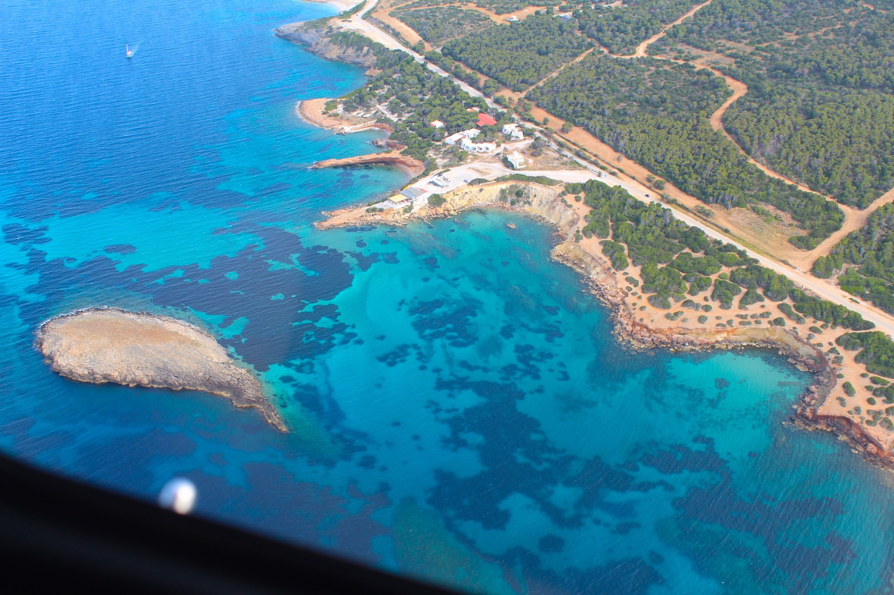
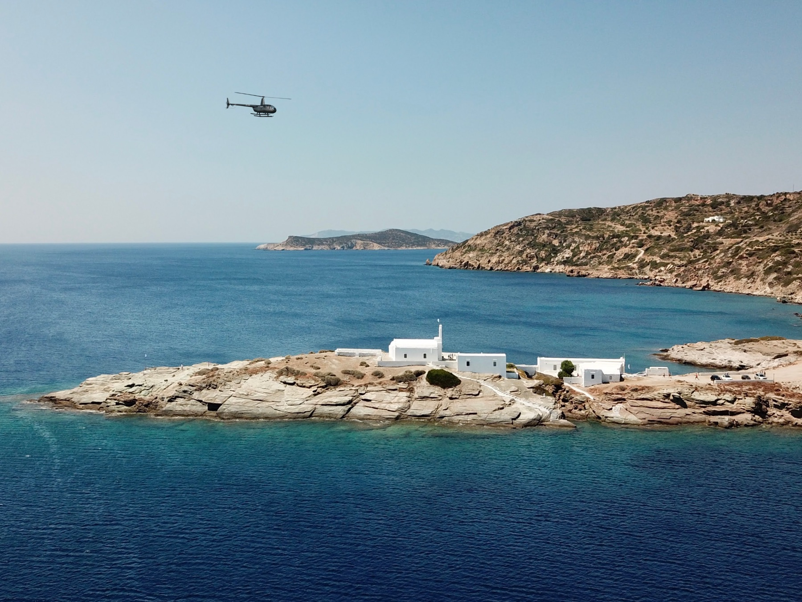
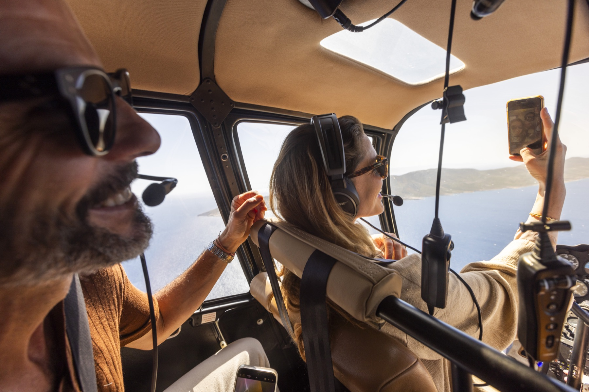

Athens to Santorini in under an hour, with the Cyclades laid out below. Through my partnership with Hoper, the ferry is now optional.
If you've read my ferry rules, you know the honest truth about Greek island logistics: fast ferries cancel in wind, the last boat of the day is a gamble, and a three-island week means three travel days. Hoper is how my clients skip all of it.
Hoper is Greece's first scheduled helicopter airline — a fleet of modern glass-cockpit helicopters connecting Athens, Santorini, and Mykonos with the harder-to-reach islands of the Cyclades and beyond. What used to be a full travel day is now a scenic flight measured in minutes, and the view over the caldera on approach is an experience in its own right.
You can book directly through my partner link below, or reach out and I'll build the flights into your itinerary — timed to your hotel check-ins, transfers on both ends included.

The travel day, deleted
Best For · Honeymooners, Tight Itineraries, Anyone Who's Met The Meltemi
Ferries are part of the Greek island experience — until the wind picks up, the boat cancels, and your carefully planned week starts unraveling. A helicopter transfer turns the most fragile part of your itinerary into the most memorable one: no port crowds, no rolling swell, just the Cyclades unfolding beneath you.
Minutes, not hours. Athens to Santorini or Mykonos runs under an hour; island-to-island hops like Mykonos to Santorini take about 45 minutes versus up to three hours by sea.
Seats or the whole aircraft. Hoper sells scheduled flights by the seat, and I can also arrange private charters when you want the helicopter to yourselves.
It's a scenic flight disguised as a transfer. The approach over the caldera — or over Oia's rooftops — is something clients talk about for years.
This is the upgrade I recommend most often for honeymoons: not a bigger suite, but a better travel day.

Three bases, the whole Aegean
Bases · Athens, Santorini & Mykonos
Hoper operates from bases in Athens, Santorini, and Mykonos, with scheduled hops to a growing list of islands — including the small ones the airlines skip entirely. That's the quiet superpower: islands like Sifnos, Folegandros, and Milos have no airport or limited flights, and Hoper puts them minutes away.
From Athens: Santorini, Mykonos, and the Saronic escapes like Spetses and Porto Heli — the perfect start or end to a Greece itinerary.
Between the islands: Santorini ↔ Mykonos, plus Sifnos, Milos, Folegandros, Ios, Antiparos, Syros, Tinos, and more.
The no-airport islands are the play. This is how you add Folegandros or Sifnos to a honeymoon without surrendering a day to the ferry schedule.
My favorite itinerary trick: fly the long legs, sail the short ones. Helicopter from Athens, private boat between neighbors.

The honest fine print
Read This · Before Your First Heli Transfer
A helicopter is not a flying SUV, and a little planning makes the experience seamless. These are the things I walk every client through before their first flight.
Pack soft and pack light. Luggage space is limited on board. If you're traveling with large hard-shell cases, tell me — I'll arrange for the rest of your luggage to travel separately so it's waiting at your hotel.
Book early in high season. These are small aircraft with limited daily schedules. June through September, the flights around sunset sell out first.
Weather still gets a vote. Helicopters handle wind differently than ferries, but extreme conditions can shift a flight. Build the same buffer you would anywhere in the Aegean — never connect to an international flight the same day.
Transfers on both ends matter. Helipads aren't always at the port or the hotel. When I book it, the car on each end is part of the plan.
Handled well, it's the smoothest travel day you'll have in Greece. Handled casually, it's still a helicopter — so let's handle it well.
Arriving in Santorini by air is the single best first impression in Greece.
Sifnos, Folegandros, and Milos without a ferry schedule dictating your week.
When the Meltemi cancels the fast ferries, my clients are already there.
Book seats directly through my Hoper partner link, or send me your itinerary and I'll arrange the flights as part of your trip — scheduled seats or a private charter, with ground transfers coordinated on both ends. Either way, you're covered by the same Hoper team in the air.
I tell clients to think of Hoper the way they think of a great hotel upgrade: you don't need it, but once you've flown into Santorini over the caldera instead of shuffling off a ferry at Athinios, it's very hard to go back.